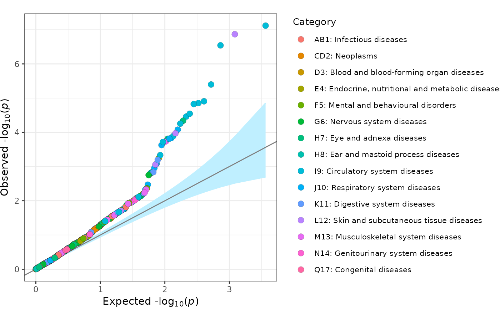

fig_qq creates a quantile-quantile (QQ) plot.
Usage
fig_qq(
pvalues = NULL,
group = NULL,
data = NULL,
groups = NULL,
colours = NULL,
interactive = FALSE,
thresh = NULL,
sample = FALSE,
sample_thresh = 0.1,
sample_prop = 0.1,
ci = TRUE,
ci_alpha = 0.05,
ci_print = FALSE,
inf_factor = FALSE,
point_size = 3,
label_top = FALSE,
label_thresh = 1e-05,
label_n = 10,
label_size = 3.25,
label_xlim = NULL,
label_box = FALSE,
title = NULL,
title_size = NULL,
title_center = FALSE,
axis_text_size = NULL,
axis_title_size = NULL,
legend = TRUE,
legend_title = "Group",
legend_text_size = NULL,
legend_title_size = NULL,
legend_point_size = NULL,
legend_spacing_size = NULL,
ymax = NULL,
plot_width = 6,
plot_height = 6,
girafe = TRUE
)Arguments
- pvalues
the association p-value for each marker (default:
NULL)- group
a
charactervectordetermining the observation group for each marker (default:NULL)- data
a
data.framecontaining the association statistics for each marker with the following columns:pvaluethe association p-value for each markergroupthe optional grouping variable for each markerlabelthe optional point labelling variable (e.g. genomic marker), iflabel = ""for a point then no label is presented for that pointtextthe optional hover text variable for interactive plots to display further information, iftext = ""for a point then no hover text is presented for that point
- groups
a
charactervectorof groups describing the grouping variable indata(default:NULL)- colours
a
charactervectorof colours corresponding to defined groups (default:NULL)- interactive
a
logicalvalue indicating whether the plot should be interactive (default:FALSE)- thresh
a
numericvalue providing the p-value threshold to be plotted (default:NULL)- sample
a
logicalvalue indicating whether a random subset of p-values above the plotting threshold should be plotted, the number of which is controlled bysample_prop(default =FALSE)- sample_thresh
a
numericvalue indicating the p-value threshold defining the sample from which additional observations are selected (default:0.1)- sample_prop
a
numericvalue indicating the proportion of sampled observations to be plotted (default:0.1)- ci
a
logicalvalue indicating whether confidence intervals should be displayed (default:TRUE)- ci_alpha
a
numericvalue providing the threshold defining the plotted confidence interval (default:0.05)- ci_print
a
logicalvalue indicating whether the proportion of points contained within the confidence interval band should be printed (default:FALSE)- inf_factor
a
logicalvalue indicating whether the inflation factor should be added to the plot (default:FALSE)- point_size
a
numericvalue indicating the size of each point (default:3)- label_top
a
logicalvalue whether the top associated points should be labelled (default:TRUE)- label_thresh
a
numericvalue providing a p-value threshold for labelling points (default:1e-5)- label_n
an
integervalue providing a limit on the number of top associations to label (default:NULL)- label_size
a
numericvalue indicating the size of each label (default:3)- label_xlim
a
numericvalue indicating maximum x-axis value at which labels can be displayed (default:NULL)- label_box
a
logicalvalue indicating whether labels should be surrounded by a box (default:FALSE)- title
a
characterstring providing a title for the plot (default:NULL)- title_size
a
numericvalue indicating the size of the title text for the plot (default:NULL)- title_center
a
logicalvalue indicating whether the plot title should be centered (default:FALSE)- axis_text_size
a
numericvalue indicating the size of the axis text for the plot (default:NULL)- axis_title_size
a
numericvalue indicating the size of the axis title text for the plot (default:NULL)- legend
a
logicalvalue indicating whether a legend corresponding to the displayed groups should be included (default:FALSE)- legend_title
a
characterstring providing a title for the legend (default:"Group")- legend_text_size
a
numericvalue indicating the size of the legend text (default:NULL)- legend_title_size
a
numericvalue indicating the size of the legend title (default:NULL)- legend_point_size
a
numericvalue indicating the size of each point within the legend (default:NULL)- legend_spacing_size
a
numericvalue indicating spacing of points present in the legend (default:NULL)- ymax
a
numericvalue defining the maximum value of the y-axis (default:NULL)- plot_width
a
numericvalue indicating the width of the plot (default:6)- plot_height
a
numericvalue indicating the height of the plot (default:6)- girafe
a
logicalvalue indicating whether an interactive plot should be turned into an interactive graphic using girafe() (default =TRUE)
Details
This plotting function plots a quantile-quantile plot of -log10(p-values). Observations can be divided into groups and can include corresponding confidence intervals. This plot is based on the QQ plot by Matthew Flickinger.
Author
James Staley jrstaley95@gmail.com
Examples
fig_qq(
pvalues = geni.plots::geni_test_phewas$pvalue
)
fig_qq(
data = geni.plots::geni_test_phewas[, c("pvalue", "group", "label", "text")],
legend_title = "Category",
legend_title_size = 10,
legend_text_size = 8
)
